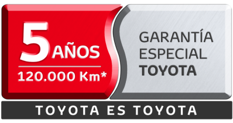
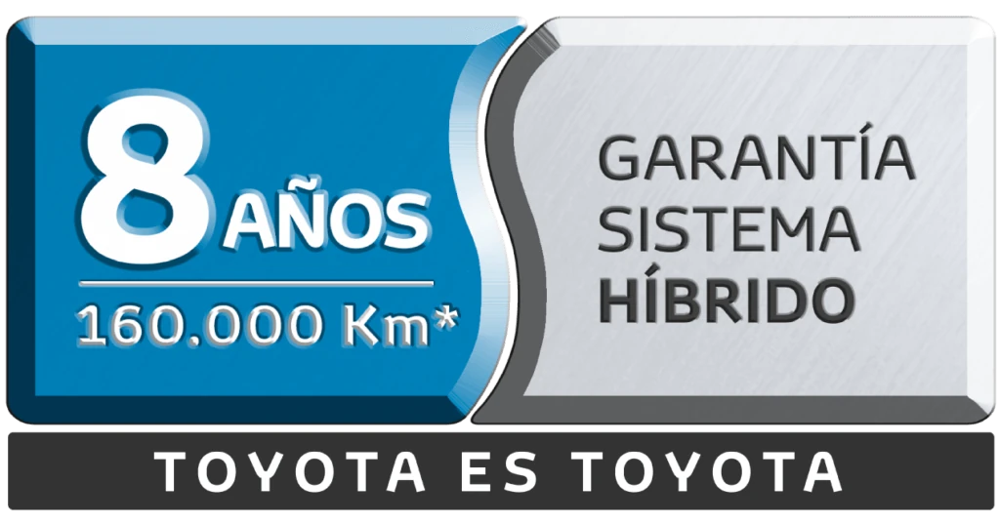

El ADN de un campeón de Rally
Arrastra para girar
*Imágenes de referencia
Selecciona un color
—
*Los colores pueden variar por cada versión.
Creado en competición
Diseñado para dominar cada curva.
*Imágenes de referencia
Ver la galería completaRazones para tener un GR Yaris
Especificaciones generales
Materiales descargables
Legales
**Imágenes de referencia. Precio sugerido al público por Automotores Toyota Colombia S.A.S a nivel nacional. Para mayor información dirija su consulta al concesionario autorizado de su preferencia. Estos valores incluyen IVA, Imp. Consumo e impuestos internos vigentes, aplicables de acuerdo con el tipo de vehículo. Los precios pueden variar según el concesionario de la Red Autorizada escogido. Automotores Toyota Colombia S.A.S no vende sus productos al público de manera directa y por ello, los precios indicados resultan sugeridos al público en los Concesionarios Oficiales.
5 años de garantía o 120.000 km

